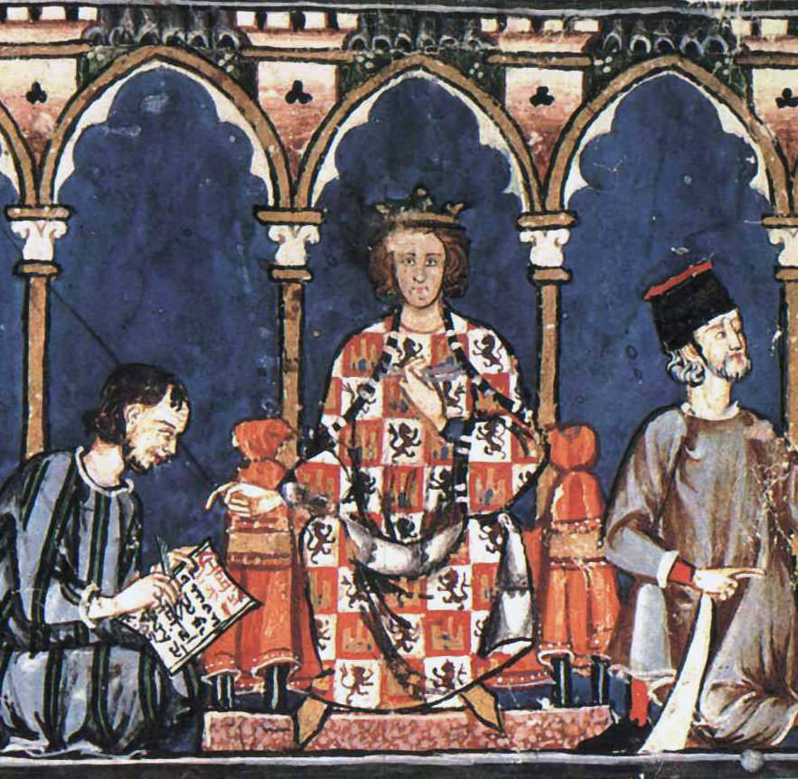

Un poco de historia
La Vega Baja del Segura como comarca ya aparecía en textos antiguos como se demuestra en el mapa de las comarcas de Emili Beüt en "Comarques naturals del Regne de València" (Comarcas naturales del Reino de Valencia) publicado en el año 1934.